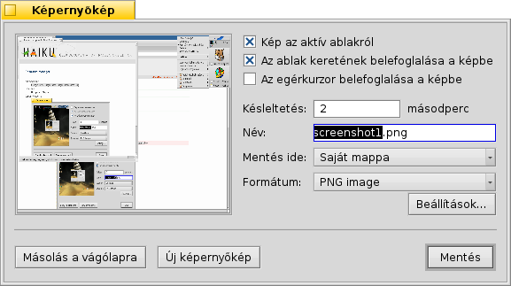

Képernyőkép (Screenshot)
Képernyőkép (Screenshot)
| Asztalsáv: | ||
| Útvonal: | /boot/system/apps/Screenshot /bin/screenshot | |
| Beállítások: | ~/config/settings/screenshot |
Ezzel a programmal képernyőképek készíthetőek, mely a PRINT billentyűvel is előhívható.

Választhatunk, hogy a teljes képernyőről, vagy csak egy adott ablakról készítünk képet, az ablak kerete is szerepeljen a képen, vagy csak annak tartalma, illetve az is megadható, hogy az egér kurzorja is a képen legyen-e. Továbbá késleltetést is adhatunk meg másodpercben.
Ezen kívül a készítendő fájl nevét, formátumát és a mentésének helyét is ki tudjuk választani, ami a gombra kattintáskor lényeges. A mentésen kívül a kép a vágólapra is helyezhető a megnyomásakor, amit majd egy másik programba beilleszthetünk. Ezen kívül pedig is készíthető.
Minden beállítást megjegyez a program, így azokat fogja használni az alábbi kombinációk használatok is:
| Késleltetés nélkül készít egy képet, majd megnyitja a program ablakát. | ||
| SHIFT PRINT | Képernyőképet készít "csendes módban" (az ablak nem jelenik meg), miközben figyelembe veszi a legutóbbi beállításokat. | |
| CTRL PRINT | Szintén "csendes módban" készíti el a képernyőképet, azonban a képet nem menti el, csak a vágólapra másolja azt. |
 Képernyőkép készítése a Terminálból
Képernyőkép készítése a Terminálból
Egy speciális screenshot program is a rendelkezésünkre áll, melyet a Terminálból vagy egy szkriptből indítható el.
A screenshot --help kiadásával kapunk egy kis segítségét a használatához:
~> screenshot --help
screenshot [OPCIÓK] [FÁJL] Egy képet készít a jelenlegi képernyőről.
A FÁJL egy kiegészítő opció, mellyel megadható a fájl illetve az útvonal csendes módban.
Egy, már létező fájl felülírása előtt kapunk majd egy figyelemztetést. Ha nincs FÁJL megadva,
akkor a fájl egy alapértelmezett néven lesz eltárolva a Saját mappában.
OPCIÓK
-m, --mouse-pointer Az egér-kurzor is megjelenik a képen.
-b, --border Az ablak kerete is a képre kerül.
-w, --window Csak a készítés pillanatában aktív ablakról készít képet.
-d, --delay=másodperc Késleltetés megadása [másodpercben].
-s, --silent A program ablakának megnyitása nélkül készíti el a képet (csendes mód).
-f, --format=formátum Az elmentendő kép formátumát tudjuk megadni, mely lehet
[bmp], [gif], [jpg], [png], [ppm], [tga], [tif]
-c, --clipboard Az elkészített képet a vágólapra másolja, de az ablakot nem jeleníti meg
Megjegyzés: a -b, --border opció csak akkor működik, ha a -w, --window is meg van adva.